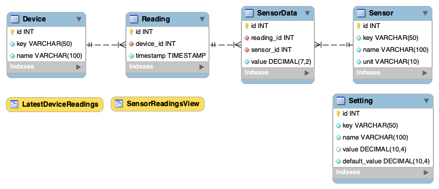
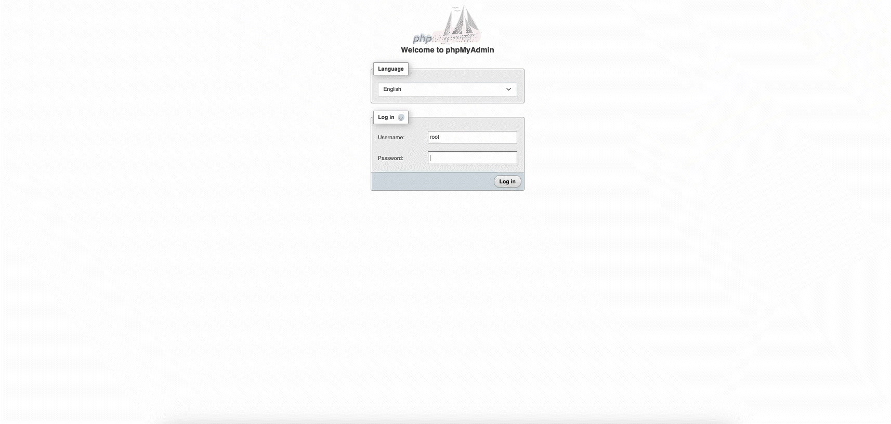

Database
Introduction
The database is designed to store the sensor data from the embedded devices efficiently. With focus on scalability and integrity, making it modular.
Technology
- MariaDB as the relational database.
- phpMyAdmin for database management.
- Draw.io for ERD diagram concept.
- MySQL Workbench for designing the database schema.
All communication with the database is handled through the API.
Considerations
The technologies were chosen based on the recommendations of the IOT's teachers. While NoSQL was considered, SQL proved to be more efficient for the project's structured approach. Additionally, these technologies are widely used in the industry, ensuring compatibility and best practices.
Database Design
Design Choices & Candidate Keys
The following tables describe each entity in the database, the chosen candidate keys, and the reasoning behind the design decisions.
Device Table
| Column | Data Type | Constraints | Candidate Key | Use Case & Design Choice |
|---|---|---|---|---|
id |
INT AUTO_INCREMENT |
PRIMARY KEY | Yes | Ensures each device has a unique identifier. |
key |
VARCHAR(50) |
UNIQUE NOT NULL | Yes | Allows human-friendly lookup (e.g., sensor_hub_1). |
name |
VARCHAR(100) |
UNIQUE NOT NULL | No | Descriptive name for UI, but not used as a key. |
Reading Table
| Column | Data Type | Constraints | Candidate Key | Use Case & Design Choice |
|---|---|---|---|---|
id |
INT AUTO_INCREMENT |
PRIMARY KEY | Yes | Ensures each reading has a unique identifier. |
device_id |
INT |
FOREIGN KEY | No | Links readings to a specific device. |
timestamp |
TIMESTAMP |
DEFAULT CURRENT_TIMESTAMP |
No | Automatically records when a reading is taken. |
Sensor Table
| Column | Data Type | Constraints | Candidate Key | Use Case & Design Choice |
|---|---|---|---|---|
id |
INT AUTO_INCREMENT |
PRIMARY KEY | Yes | Ensures uniqueness for each sensor type. |
key |
VARCHAR(50) |
UNIQUE NOT NULL | Yes | Used for lookups, prevents duplicate sensor types. |
name |
VARCHAR(100) |
NOT NULL | No | Descriptive name, but not unique enough for indexing. |
unit |
VARCHAR(10) |
NOT NULL | No | Stores unit of measurement (e.g., °C, hPa). |
SensorData Table
| Column | Data Type | Constraints | Candidate Key | Use Case & Design Choice |
|---|---|---|---|---|
id |
INT AUTO_INCREMENT |
PRIMARY KEY | Yes | Ensures each sensor reading is uniquely stored. |
reading_id |
INT |
FOREIGN KEY | No | Links to the Reading table. |
sensor_id |
INT |
FOREIGN KEY | No | Links to the Sensor table. |
value |
DECIMAL(7,2) |
NOT NULL | No | Stores the sensor measurement with precision. |
Setting Table
| Column | Data Type | Constraints | Candidate Key | Use Case & Design Choice |
|---|---|---|---|---|
id |
INT AUTO_INCREMENT |
PRIMARY KEY | Yes | Uniquely identifies each setting. |
key |
VARCHAR(50) |
UNIQUE NOT NULL | Yes | Used for lookup in the system. |
name |
VARCHAR(100) |
NOT NULL | No | Descriptive setting name. |
value |
DECIMAL(10,4) |
NULL | No | Stores user-defined value (overrides default). |
default_value |
DECIMAL(10,4) |
NOT NULL | No | Stores the system's fallback setting. |
ERD Schema
The diagram below represents the Entity-Relationship Diagram (ERD) for the database, illustrating how the tables relate to each other.

Database Schema
The following SQL script defines the Schema for the database.
1 2 3 4 5 6 7 8 9 10 11 12 13 14 15 16 17 18 19 20 21 22 23 24 25 26 27 28 29 30 31 32 33 34 35 36 37 38 39 40 41 42 43 44 45 46 47 48 49 50 51 52 | |
Data Inserts
This section provides predefined data inserts for sensors and system settings, ensuring the project is ready.
Add Arduino Sensors to the Sensor Table
1 2 3 4 5 6 7 | |
Add Arduino Sensors to the Sensor Table
1 2 3 4 5 6 7 8 9 10 11 12 13 14 15 16 17 18 19 20 21 22 23 24 25 26 | |
Views
Views allow for efficient querying and pre-processing of sensor data, providing structured results without complex SQL joins in API queries.
Latest Sensor Readings Per Device
Fetches the most recent sensor readings per device, ensuring that each device only appears once with its latest values.
1 | |
1 2 3 4 5 6 7 8 9 10 11 12 13 14 15 16 | |
Step-by-Step Guide
This guide shows how to create the database, add a user, and import the SQL script inside the Docker-powered phpMyAdmin environment.
YOUR_DB_NAME is atmos by default, but you can use a different name—just make sure to update the SQL script to reference the correct database.
📌 The full SQL script is available on GitLab.
1. Start phpMyAdmin

- Run Docker (if not already running).
- Open localhost/phpmyadmin.
- Log in with root MySQL credentials. (Can be found in the
.envin the root of the repository)
2. Create the Database

- Go to the Databases tab.
- Enter
YOUR_DB_NAMEas the database name. - Select utf8mb4_general_ci collation.
- Click Create.
3. Create a New User

- Navigate to User accounts.
- Click Add user account.
- Set:
- Username: Set a username
- Host:
localhostor%depending on the network. - Password: Set a password
- Click Go to create the user.
- Under Database, select Grant privileges on database → Choose
atmos. - Under Data grant the following privileges:
SELECTINSERTUPDATEDELETE- Click Go to update the user.
4. Import the SQL Script

- Go to Import.
- Click Choose File → Select the SQL script.
- Click Go to execute it.
5. Verify the Setup

- Open the atmos database in phpMyAdmin.
- Check if all tables exist.
- Run
SELECT * FROM Setting;to test the data.
File
📌 The full SQL script is available on GitLab.